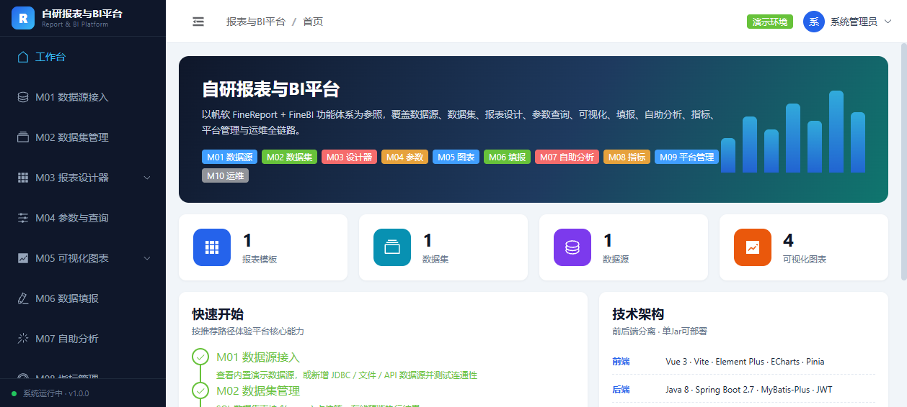
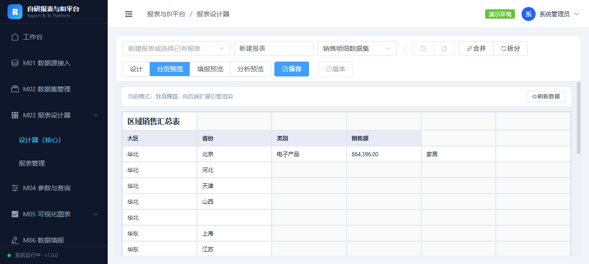
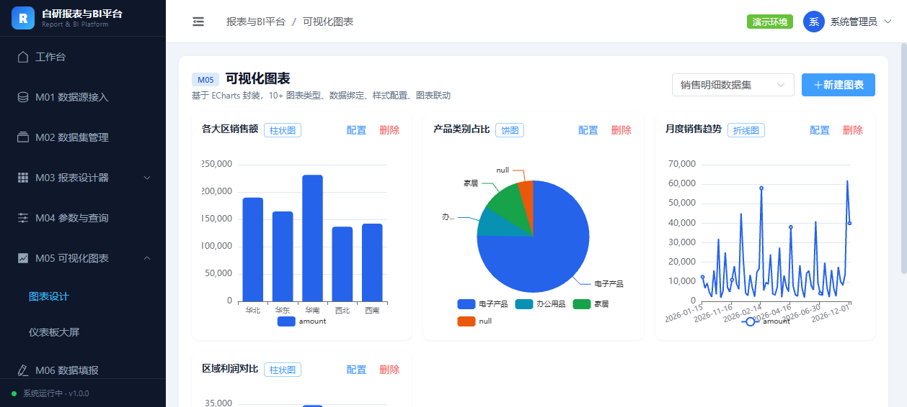
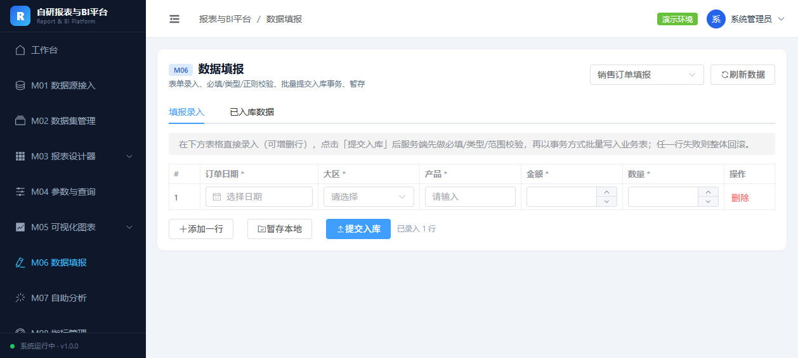
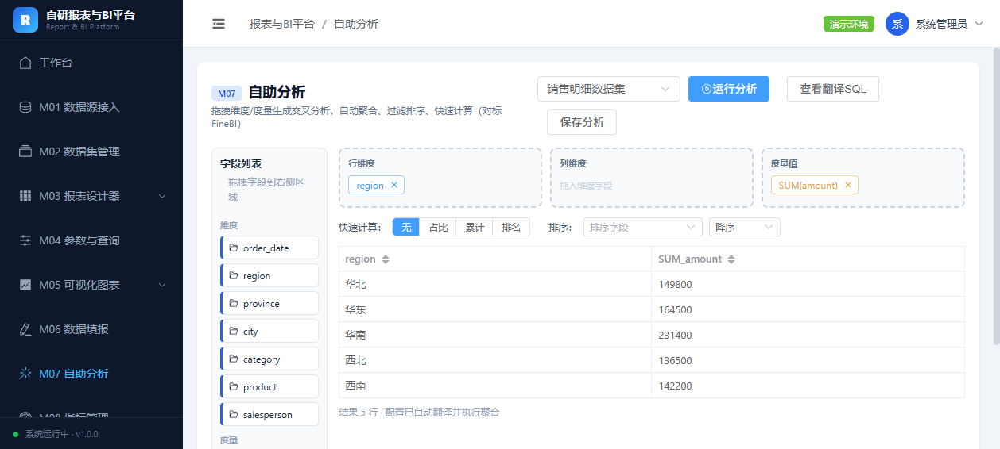
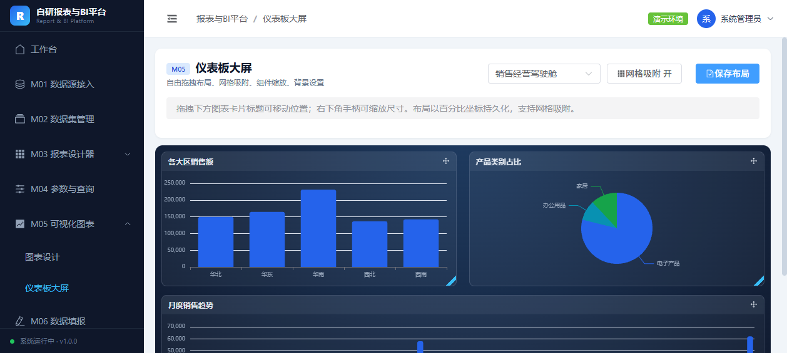
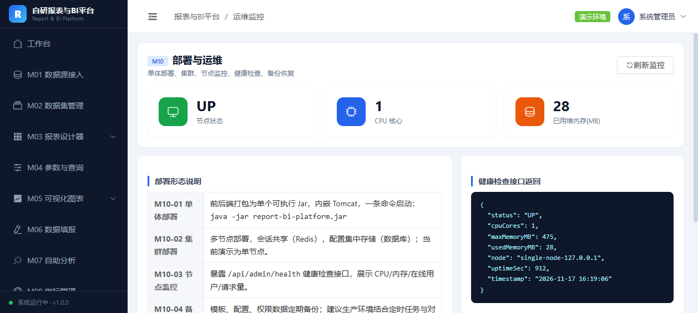

私有化部署的报表与自助分析平台 · Java 8/Spring Boot 2.7 后端 + Vue 3 前端 · 10 大模块全覆盖
部署日期：2026-11-17 · 目标服务器：<生产服务器IP>
| 项目 | 内容 |
|---|---|
| 服务器 | <生产服务器IP>:23195（root）· Ubuntu 22.04 · Java 17 · 磁盘 13G 可用 |
| 部署目录 | /opt/rbi/，jar /opt/rbi/report-bi-platform-1.0.0.jar，日志 /opt/rbi/logs/rbi.log |
| 环境变量 | /opt/rbi/rbi.env（权限 600，含 MySQL 连接参数） |
| 后台元数据库 | rbi_platform · 18 张表 · 用户/角色/报表/数据集/图表/指标/权限/调度/日志 |
| 测试业务库 | rbi_testdb · demo_sales 65 行 · 填报数据也持久化到此库 |
| 数据库账号 | rbi（两库全权限，mysql_native_password） |
| 健康检查 | /api/admin/health → {"status":"UP"} |
DbInitializer 首次启动自动建测试表并灌入演示数据，已存在则跳过，保护填报数据不丢失。| 序号 | 验证项 | 结果 | 实测证据 |
|---|---|---|---|
| 1 | 用户登录（JWT） | PASS | admin / 123456，返回 token 与角色 ADMIN |
| 2 | 数据集查询（测试库） | PASS | demo_sales 返回 65 行，来自 rbi_testdb |
| 3 | 中文参数注入 | PASS | region=华北 → 15 行，大区集合仅 ['华北'] |
| 4 | SQL 注入防护 | PASS | 恶意参数 华北' OR '1'='1 → 0 行，未泄露数据 |
| 5 | 报表扩展渲染 | PASS | 网格 23×5，行2=['华北','北京','电子产品','824,400.00'] |
| 6 | 自助分析聚合 | PASS | 按大区分组 SUM(amount)，5 个分组 |
| 7 | 图表数据聚合 | PASS | 各大区销售额 5 个分类 |
| 8 | 填报入库 | PASS | 提交1条 → "成功提交 1 条记录" |
| 9 | 填报数据落 MySQL | PASS | 回查命中 1 条，确认持久化到 rbi_testdb |
| 10-23 | 其余模块列表 API | PASS | 数据源1/数据集1/报表1/参数3/图表4/仪表板1/用户3/角色3/目录4/权限3/调度1/日志2/指标4/健康UP，共14项全部正常 |
使用真实浏览器访问远程地址，逐模块登录、导航、交互，全程控制台 零错误。







| 模块 | 深挖/实现要点 |
|---|---|
| M03 扩展引擎（深挖重点） | "扩展方向(v/h/none) + 父格关系"的递归渲染引擎：父格每个取值形成分组上下文，子格在上下文内再展开（逐层下钻）；父格被子格"撑开"时值向下继承；公式格在父格上下文中聚合。配套 6 个单元测试。 |
| 公式引擎 | 递归下降解析器，SUM/AVG/COUNT/MAX/MIN/IF/CONCAT/ROUND + 单元格引用 A1+B1 + 四则运算，不依赖脚本引擎（安全）。 |
| SQL 安全 | ${param} 按类型转义；*_filter 走白名单模板；字段/表名白名单校验，杜绝注入。 |
| 其余模块 | M01 多源接入（含达梦/金仓/GaussDB 驱动位）、M02 数据集缓存、M04 参数联动、M05 12 类图表、M06 事务填报、M07 配置转 SQL、M08 指标血缘、M09 RBAC+权限、M10 单 Jar+监控，均已实现并对接真实 MySQL。 |
| 操作 | 命令 |
|---|---|
| 查看服务状态 | systemctl status rbi |
| 重启服务 | systemctl restart rbi |
| 查看日志 | tail -f /opt/rbi/logs/rbi.log |
| 健康检查 | curl http://<生产服务器IP>:8099/api/admin/health |
| 查看数据库 | sudo mysql rbi_platform -e 'SHOW TABLES;' / sudo mysql rbi_testdb -e 'SELECT COUNT(*) FROM demo_sales;' |
| 演示账号 | admin / analyst / viewer，密码均为 123456 |
/opt/rbi/rbi.env，权限已设为 600。请勿将凭据提交到代码仓库。